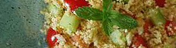

Tabbouleh
4 von 6couscous wie gewöhnlich zubereiten und abkühlen lassen, dabei achten, dass es nicht zu klumpig wird,
beiseite stellen. gurken, tomaten, rübli, peperoni und eine zwiebel fein schneiden und in eine
schüssel geben. couscous dazugeben und gut vermischen. eine gepresste zitrone sowie olivenöl,
salz, pfeffer und natürlich fein gehackte frische minze darüber geben. einige merguez in der pfanne
gut durchbraten und grob schneiden, daruntergeben. wenn möglich einige stunden ziehen lassen.
